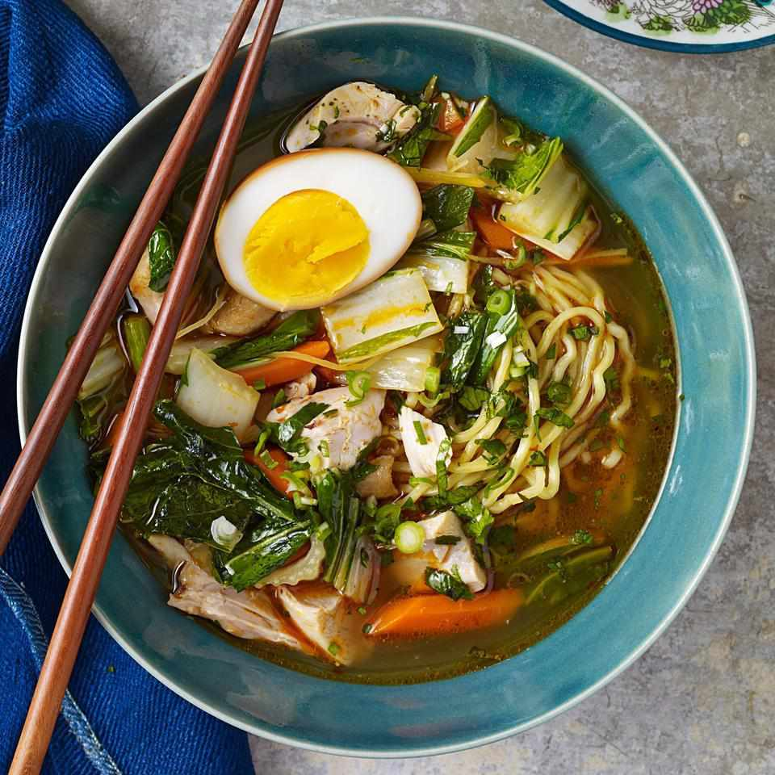
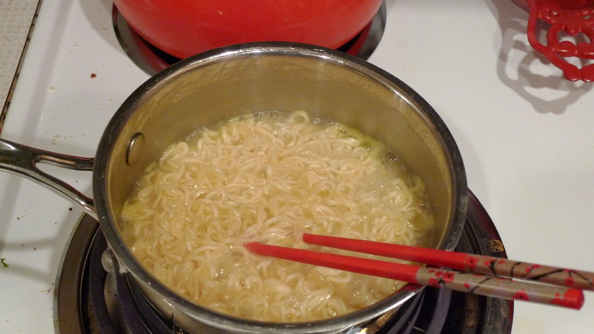

Haruto's Signature Ramen
Here is how to make Chef Haruto's special home-made ramen.
| Ingredients |
| Sesame oil |
| Minced Garlic |
| Ginger Paste |
| Sliced Mushrooms |
| Chicken Stock |
| Water (to adjust consistency) |
| Soy Sauce (a must!) |
| Baby Bokchoy |
| Instant Ramen (no packets, or use fresh ramen) |
| Salt and Pepper (for taste) |
| Optional Toppings |
| Grilled Chicken |
| Soft Boiled Egg |
| Sliced Green Onions |
| Sesame Seeds |

- Sauté Vegetables: Add the sesame oil into a large pot and heat over medium heat. Add in the
garlic and ginger and sauté for 30 seconds until fragrant. Add in the sliced mushrooms and cook
for 3-5 minutes or until softened.
- Add Liquids: Pour in the chicken stock, water, and soy sauce.
- Simmer: Then bring to a boil and simmer for about 5 minutes.
- Cook Bokchoy: Add the bokchoy and then simmer for an additional 2 minutes to soften the leaves.
- Add Noodles: Remove the pot from the heat. Then place the ramen noodles in the hot pot of broth.
Allow the noodles to sit for ONLY a couple of minutes until they loosen and soften up. The
noodles will soften quickly, so this should be done right before serving.

- Transfer to Serving Bowls: Divide the ramen, veggies, and broth evenly into bowls.
- Add Toppings: Top the ramen with sliced grilled chicken and soft boiled eggs. Then garnish with
toppings of choice and enjoy!